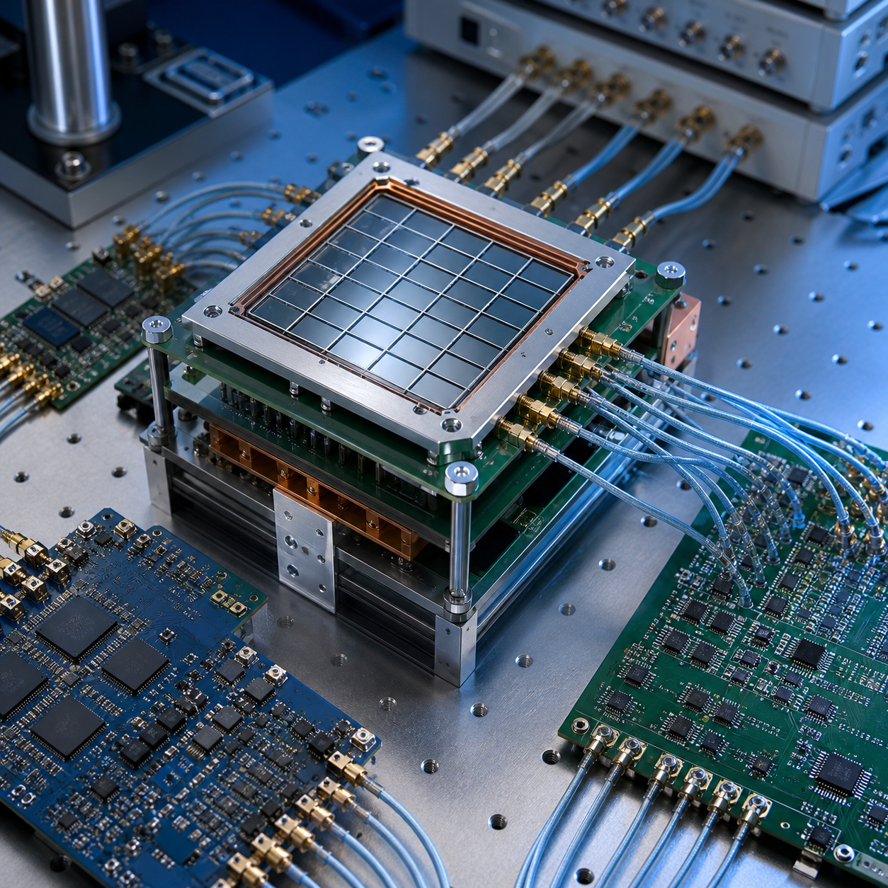
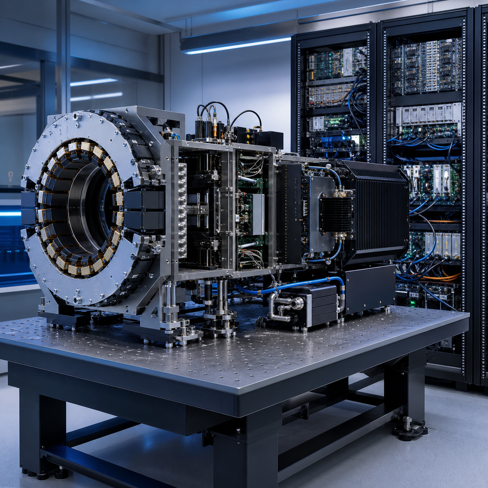
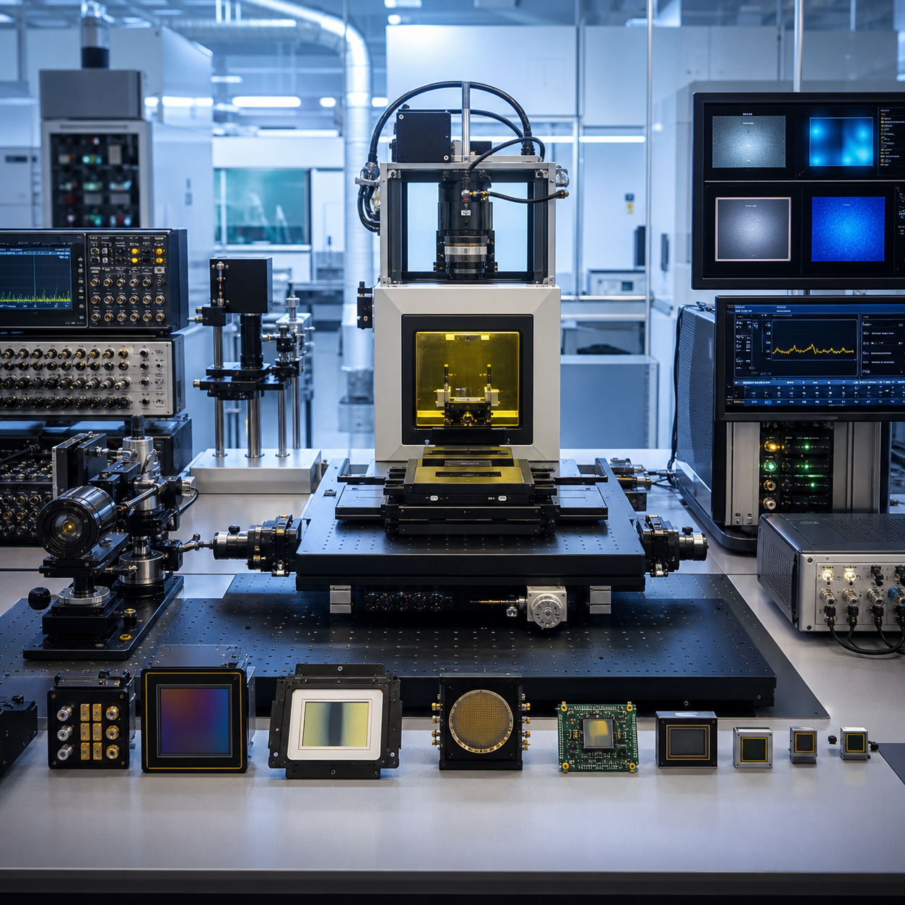

Multi-Voltage Threshold
Beyond Shannon, Beyond PET
An Analog-to-Digital Converter (ADC), which converts analog signals into digital signals, serves as a bridge connecting the physical world with the information world. It is also a core fundamental component in modern industry and scientific research.Since the 1920s, with the electronic implementation and mathematical formalization of uniform sampling in the time domain, uniform time-domain sampling has become the cornerstone of the ADC field. However, for application scenarios requiring high-speed, multi-channel signal acquisition—such as Positron Emission Tomography (PET), nuclear fusion neutron spectroscopy, and neutrino detection—ADC solutions based on uniform time-domain sampling become impractical due to prohibitive power consumption and cost.The team invented the Multi-Voltage Threshold (MVT) digitization method. Based on sampling in the amplitude domain and incorporating prior knowledge of the signal, the MVT method can accurately digitize high-speed signals from a massive number of channels using only a handful of voltage threshold comparators. Currently, the MVT method has been successfully applied in fields including Positron Emission Tomography (PET), X-ray security screening, neutron oil well logging, and proton therapy monitoring.
We offer a specialized portfolio of multi-voltage threshold detection technologies, integrated system design expertise, and state-of-the-art experimental facilities. See below to explore how these core capabilities enable high-rate, high-precision particle imaging missions and advance the future of nuclear medicine, high-energy physics, and astroparticle detection systems.
Core technologies
Our core technology research focuses on developing innovative multi-voltage threshold chip architectures and weak-light detection mechanisms to break through the performance limits of ADC solutions based on uniform time-domain sampling. We pursue innovation in a wide set of areas, including reconfigurable multi-threshold readout circuits, high-rate pile-up signal discrimination, ultra-low-noise single-photon detection, radiation-hardened integrated silicon photomultiplier devices, and quantitative PET imaging calibration technologies..

Systems expertise
Our engineers integrate multi-voltage threshold chip cores with scintillation materials, sensor arrays, and imaging reconstruction algorithms to deliver fully optimized detection system performance. Our work ranges from architecture trade-off analysis and custom chip design at the early research stage, to system integration, performance calibration, and prototype verification of full-chain particle detection platforms. Example mission applications include high-luminosity collider particle identification, whole-body and intraoperative PET molecular imaging, underground rare-event physics detection, and space-borne astroparticle observation payloads.

Capabilities
Our laboratory research team leverages world-class R&D platforms to complete the construction and performance validation of multi-voltage threshold detection system prototypes. The software development team complements the hardware system with customized high-speed signal processing pipelines, full-data correction algorithms, and end-to-end imaging reconstruction frameworks supported by high-performance computing resources. These fully integrated prototypes are validated for reliability under extreme operational conditions of ultra-high count rates and strong radiation, delivering accurate, stable, and quantitative detection data for frontier fundamental physics research and precision clinical nuclear medicine applications.
Featured Projects

NSFC Fund for Distinguished Young Scholars
Digital PET Imaging
Digital PET imaging platforms deliver precise digitization for massive parallel channels and high-speed scintillation signal streams to achieve high-fidelity quantitative molecular measurement for nuclear medicine and particle physics experiments.

NSFC Original Exploration Program Project
All-Digital Silicon Photomultiplier with High Sensitivity and High Count Rate
High-sensitivity, high-throughput all-digital SiPM integrated circuits resolve overlapping scintillation signals under intense irradiation for high-rate PET and radiation detection environments.

NSFC National Major Scientific Research Instrument
Development Project
Observation Device for Energy Transport of Proton Beams in Biological Tissues
Custom proton beam measurement instruments quantify beam energy deposition within biological tissues to enable real-time dosimetry monitoring and optimized proton therapy treatment planning.

NSFC Major International (Regional) Joint Research
Project
Flat-panel PET Imaging
Flat-panel PET detection hardware expands molecular imaging workflows for intraoperative, preclinical small-animal and portable bedside scanning unavailable to conventional ring PET systems.
Latest News

September 9
Digital PET Laboratory
Explore how all-digital PET restructures the detection and computing chain through its principles, evolution, system advantages, applications, and future directions.

September 9
Digital PET Laboratory
High-fidelity event data, modular systems, and open software give life science, medicine, pharmacy, and particle-detection research new technical leverage.

July 20, 2022
ScienceNet
On July 19, the World Intellectual Property Organization (WIPO) held a ceremony at its headquarters in Geneva, Switzerland to award the global prize for small and medium-sized enterprises.
A History of Impact
REDEFINING HIGH-RATE WEAK-LIGHT DETECTION WITH MVT
The Multi-Voltage Threshold (MVT) technology framework pioneers a revolutionary signal readout paradigm for silicon photomultipliers, breaking inherent performance bottlenecks of conventional analog signal acquisition schemes and reshaping the technical foundation of high-precision nuclear imaging and particle detection.
EMPOWERING NEXT-GENERATION PET AND FUNDAMENTAL PHYSICS DETECTION
Innovative multi-threshold signal discrimination and digitization technologies enable ultra-high-count-rate, low-noise weak-photon detection, unlocking unprecedented capabilities for dynamic clinical PET imaging, extreme-condition particle measurement, and high-precision dosimetry that were previously unattainable with conventional detection systems.
Advancing Our Research
Featured Publications
A novel iterative iso-transmission line empirical material decomposition algorithm for multi-energy photon-counting CT
Jan 01
Biomedical Signal Processing and
Control,
99, 2025, 106853. doi:10.1016/j.bspc.2024.106853.
Performance Evaluation of New PET/CT DigitMI 930
Jan 09
IEEE Transactions on Radiation and
Plasma
Medical Sciences, vol. 9, no. 5, pp. 578-585, May 2025, doi:
10.1109/TRPMS.2025.3526659.
Investigation of a Dual-Panel In-Beam PET Based on Digital Detectors for Proton Therapy Monitoring With Different Monitoring Strategies: A Simulation Study
Jan 30
IEEE Transactions on Radiation and
Plasma
Medical Sciences, vol. 10, no. 4, pp. 582-592, April 2026, doi:
10.1109/TRPMS.2025.3584122.


Engage with us
Join us to explore inspiring, challenging research via collaborative work.